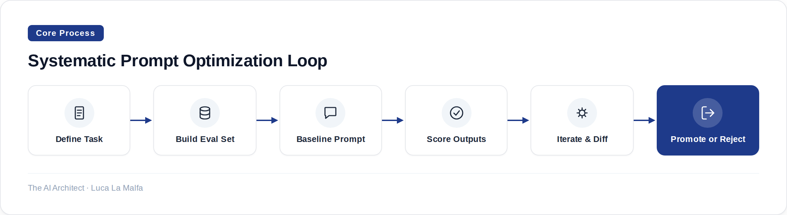

How to move from intuitive prompt tweaking to a disciplined optimization process that actually holds up in production.
September 22, 2026
Most prompt engineering I see in the wild is archaeology. Someone wrote a prompt six months ago, it mostly worked, and now it lives in a config file that nobody touches because everyone is afraid of breaking something. When the model starts misbehaving — wrong format, missed edge cases, hallucinated fields — the response is to bolt on another sentence at the bottom. The prompt grows. The behavior gets marginally better. Nobody knows why.
This is not a workflow problem. It is a methodology problem. Prompt engineering done well is closer to software testing than to creative writing: you define what correct output looks like, you build a set of test cases that covers your edge cases, and you treat every change to the prompt as a commit that has to pass the suite before it ships. Without that structure, you are not optimizing — you are wandering.

The loop above sounds obvious, but the step people skip is the second one. Building a real eval set is tedious, and it requires you to have an opinion about what correct looks like — which is uncomfortable when the task is ambiguous. I push clients to do this before writing a single word of prompt. Fifty labeled examples is not a lot, but it is enough to stop you from shipping a regression. A hundred is enough to detect meaningful differences between prompt variants. If you cannot label fifty examples, you do not understand your task well enough to prompt for it.
Once you have an eval set, prompt iteration becomes a controlled experiment. You change one thing at a time — role definition, instruction phrasing, output format, few-shot examples, chain-of-thought scaffolding — and you measure the delta. This is slower than just rewriting the whole prompt, but it is the only way to know which changes are actually doing work. I have seen prompts where removing the elaborate persona description improved accuracy by eight points. I have seen prompts where adding two well-chosen few-shot examples cut hallucination rate in half. You only find these things if you are measuring.
There are a few structural levers worth understanding explicitly. Instruction ordering matters more than most people expect: models weight earlier content more heavily, so if your most critical constraint is buried in paragraph four, it will be violated more often than if it is in paragraph one. Role framing matters for tone and register but is frequently oversold as a reliability mechanism — telling the model it is an expert does not substitute for telling it precisely what to do. Output format instructions work best when you show an example rather than describe the schema in prose; a single JSON skeleton in the prompt is worth three paragraphs of field descriptions.
Few-shot examples are the highest-leverage primitive you have, and they are also the easiest to get wrong. The examples need to cover the distribution of your real inputs, including the awkward edge cases. If all your examples are clean, well-formed inputs, the model will perform well on clean inputs and fall apart on the messy ones that actually show up in production. I treat few-shot selection as a curation problem: I pull examples from real logs, not from my imagination, and I make sure at least a third of them are cases that tripped up an earlier prompt version.
One failure mode that does not get discussed enough is prompt brittleness to model updates. A prompt that scores 91% on GPT-4o today may score 84% after a model update, or when you switch to a different provider. The prompt has encoded assumptions about how a specific model version interprets certain phrasings, and those assumptions are invisible until they break. The mitigation is not to avoid model updates — it is to keep your eval set and run it every time you change anything in the stack, including the model. Treat the prompt and the model version as a coupled artifact.
There is also the subtler issue of prompt injection surface area, which grows as prompts get more complex. When you are pulling dynamic content into a prompt — user text, retrieved chunks, tool outputs — every one of those insertion points is a place where unexpected content can reshape the model's behavior. The self-generated injection reports coming out of alignment research are an extreme version of this, but the mundane version shows up in enterprise RAG systems all the time: a retrieved document contains text that overrides an instruction, and the model quietly does something different from what you intended. Keeping your instruction block and your data block structurally separated — and testing with adversarial inputs — is basic hygiene that most teams skip.
The eval set I build before writing anything
Every prompt project I take on starts the same way: I ask the client to give me fifty real inputs and label what the correct output should be, in whatever format the prompt is supposed to produce. If they push back, I label them myself from their logs. Only after that exists do I write the first draft of the prompt. The eval set is the north star — it tells me whether I am making progress or just making changes. I also keep a 'regression tier' of ten cases that broke previous versions, and those ten have to pass before anything else matters.
anthropics/claude-cookbooks — Worked prompt-design examples across classification, RAG, and summarization.
Inspired by Self-generated prompt injections in compaction summaries (Simon Willison)